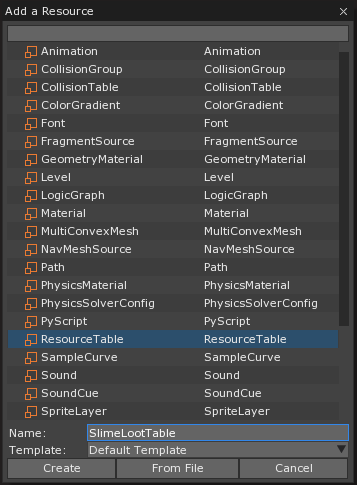
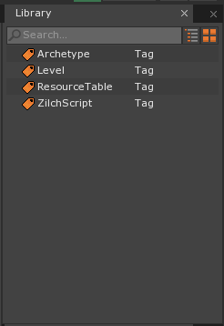
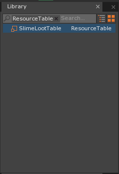
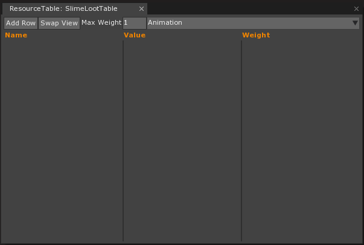
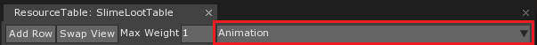
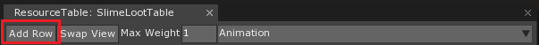
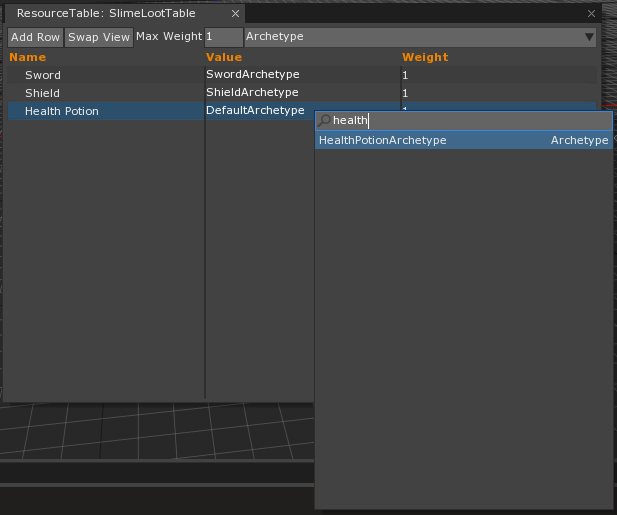
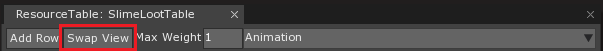
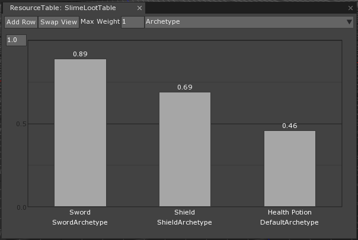

ResourceTable
Resource Table is a data structure that stores a specified type of resource or Zilch type. This includes resources such as Materials, Levels, Archetypes, plus Strings and more. Resource Tables are useful in various scenarios, including:
- Determining loot tables
- Handling what sound cues to play in a pseudo-random fashion
- and more.
Example
An example of a Resource Table is an enemy loot drop table. Suppose there is an enemy called Slime. By creating a loot table for this slime enemy called the SlimeEnemyLootTable, it can be populated with all the possible items that the Slime enemy will drop. In addition, the drop rate of each individual item can be specified if some items should drop more often than others.
Below is a visual representation of a potential loot table:
| Loot | Loot Rate |
|---|---|
| Sword | 0.2 |
| Shield | 0.2 |
| Health Potion | 0.6 |
Creating a ResourceTable
A new Resource Table can be created though the “Add a Resource” window by using Command : Add or clicking on the Add button and selecting Resource Table from the resources list. As with most resources it must have its name changed from the default name it begins with.

After creating the Resource Table, it will be added to the Library under the ResourceTable tag.
 
Open the Resource Table from the Library to see any resources added to the table as well as add new ones.

Populating a ResourceTable
ResourceTable Type
Before populating a Resource Table, it must have which type of resource should be stored by the Resource Table assigned. This can be done using the dropdown menu.

Resource Type
A ResourceTable can only hold resources of a single type.
| ResourceTable Supported Types | ||
|---|---|---|
| Animation | AnimationSet | Archetype |
| Atlas | CollisionGroup | CollisionTable |
| ColorGradient | ConvexMesh | Font |
| GeometryMaterial | Level | LogicGraph |
| Material | Mesh | MultiConvexMesh |
| NavMeshSource | Path | PhysicsMaterial |
| PhysicsMesh | PhysicsSolverConfig | ResourceTable |
| SampleCurve | ShaderGraph | Sound |
| SoundCue | SpriteLayer | SpriteLayerOrder |
| SpriteSource | StateMachine | String |
| TextBlock | Texture | TextureRegion |
| TileDefinition | TileSet | WeightedTable |
Understanding the Table Attributes
- Name - The name to be given to the resource in relation to the ResourceTable. Note that this does not affect the name of the resource outside of the table.
- Value - The resource stored. This value has the type of the ResourceTable Type as it has been defined.
- Weight - This affects several sampling functions which determine how often this resource will be chosen.
Adding a resource
New resources can added to the ResourceTable by clicking on the Add Row button at the top left of the window.

Once a new row has been added, the attributes of that row can be edited by double clicking on it.

Switching View
By clicking on the Swap View button, it is possible to switch between two different visualizations. This other view visually represents the weights of the resources, which gives a better image of how each resource’s weight relates to one another.


Using the Resource Table
As an example, suppose that there should be a randomized loot drop for the player after a successful combat with the slime monster. This can be done by looking at the ResourceTable and choosing the appropriate resource. Once the ResourceTable has been populated, an object may be chosen based on weight by using one of two functions:
SampleValue:returns a random value based on the weight of each row.SampleResource:returns the type of resource that represents a random value based on the weight of each row.
The difference between the two functions is simply their return types: SampleValue will return a String while SampleResource will return a Resource.
Note
There is a third Sample function available to the ResourceTable, SampleIndex, which returns a random index into the loot table based on the weight of each row. This can be used to not only access the value but also the name and weight of the resource.
All three of the functions take in two Real values between 0.0 and 1.0.
Since the ResourceTable has been made using Archetypes, SampleResource is the function that should be used:
var rand = Random();
var slimeLootTable = ResourceTable.SlimeLootTable;
var loot = slimeLootTable.SampleResource(rand.Range(0.0, 0.9), rand.Range(0.0, 0.9));
this.Space.Create(loot as Archetype);
This will now randomly pick an item to create, with ones given a higher weight chosen more often, and create it in the scene whenever called.